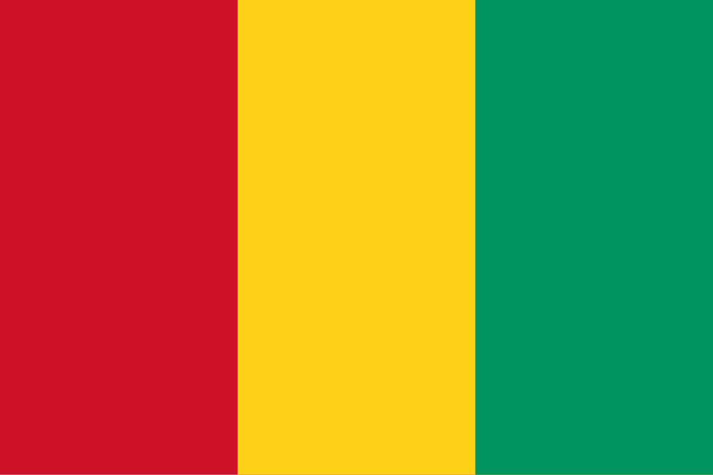

Guiné
 A Guiné, oficialmente República da Guiné, é um país situado na África Ocidental, com capital em Conacri. Faz fronteira com seis países: Guiné-Bissau a noroeste, Senegal e Mali ao norte, Costa do Marfim a leste, Serra Leoa a sudoeste e Libéria ao sul, além de possuir litoral no oceano Atlântico. O país ocupa uma área de aproximadamente 245 mil km² e possui uma população diversa, composta por mais de 24 etnias, sendo os fulani (peul), malinké e susu os maiores grupos. A Guiné é muitas vezes chamada de “escândalo geológico” devido à enorme riqueza de recursos naturais, incluindo as maiores reservas conhecidas de bauxita do mundo, além de ouro, diamantes e ferro. Apesar desse potencial, o país enfrenta desafios de desenvolvimento, infraestrutura precária e instabilidade política, embora seja culturalmente vibrante e tenha grande importância regional. A Guiné é membro da União Africana, CEDEAO, ONU e outras organizações internacionais.
História
A história da Guiné é marcada por civilizações antigas e pela influência de grandes impérios da África Ocidental. Durante a Idade Média, o território atual da Guiné fez parte do Império de Gana, do Império do Mali e do Império Songhai, todos poderosos estados baseados no comércio de ouro e sal. A região foi também um centro de difusão do Islã, trazido por comerciantes e eruditos que consolidaram a religião em várias comunidades locais. Povos como os malinké e fulani desempenharam papéis fundamentais na política e cultura regional.
Com a chegada dos europeus ao litoral no século XV, especialmente os portugueses, a Guiné integrou-se ao comércio atlântico, incluindo o tráfico de escravos, que teve impacto devastador nas populações locais. No século XIX, a França consolidou o domínio colonial, transformando a Guiné em parte da África Ocidental Francesa. Durante o período colonial, a exploração de recursos naturais intensificou-se, mas os guineenses resistiram ao domínio estrangeiro, sobretudo sob a liderança de Samori Touré, que lutou contra a penetração francesa no interior.
Em 1958, sob a liderança de Ahmed Sékou Touré, a Guiné foi o primeiro país da África Francesa a rejeitar a comunidade proposta por Charles de Gaulle, optando por independência imediata. A decisão foi histórica e inspirou outros movimentos de libertação no continente. Sékou Touré governou como presidente até 1984, implementando um regime de partido único com forte viés socialista. Após sua morte, a Guiné passou por períodos de golpes militares, autoritarismo e crises econômicas, mas também iniciou uma lenta abertura política. Atualmente, o país continua enfrentando desafios relacionados à democracia, infraestrutura e desigualdade, embora mantenha grande relevância estratégica na África Ocidental.
Cultura
A cultura guineense é extremamente diversificada, reflexo da presença de diferentes grupos étnicos, cada um com suas tradições, línguas e práticas culturais. A música desempenha um papel central na identidade do país, sendo mundialmente reconhecida pela qualidade de seus percussionistas, especialmente nos tambores djembe e dunun. Grupos como Les Percussions de Guinée ajudaram a popularizar os ritmos tradicionais em nível internacional. Além da música tradicional, a Guiné também contribuiu para a cena africana contemporânea com gêneros como o afro-pop e a fusão entre tradições locais e sonoridades modernas.
A gastronomia é baseada em produtos locais como arroz, mandioca, milho e inhame, geralmente acompanhados de molhos temperados, vegetais e carne ou peixe. Pratos típicos incluem o “riz gras” (arroz gorduroso com molho) e o “foutti”, preparado com folhas de mandioca. As festividades religiosas e culturais são marcadas por danças, roupas coloridas e música, sendo o Islã a religião predominante, praticada por cerca de 85% da população, enquanto o cristianismo e as religiões tradicionais africanas também têm presença significativa.
No campo linguístico, o francês é a língua oficial e de administração, mas as línguas nacionais têm enorme importância no dia a dia, como o susu, o pular (fulani) e o maninka. A literatura guineense ganhou notoriedade com autores como Camara Laye, cujo romance autobiográfico “L’Enfant noir” tornou-se referência da literatura africana. As artes visuais, o artesanato em madeira, tecidos bordados e esculturas também fazem parte da identidade nacional.


Clima
A Guiné apresenta clima tropical úmido, com duas estações bem definidas: a chuvosa, que vai de maio a outubro, e a seca, dominada pelos ventos harmatão vindos do Saara, entre novembro e abril. A região costeira recebe chuvas abundantes, chegando a ser uma das mais úmidas da África Ocidental, enquanto o interior apresenta clima mais seco. As temperaturas médias variam entre 24°C e 32°C ao longo do ano, mas podem ser mais elevadas no interior. Essa diversidade climática influencia diretamente a agricultura, que é uma das principais atividades econômicas, com destaque para o cultivo de arroz, milho, café e frutas tropicais.
Biodiversidade
A Guiné é considerada um dos países mais ricos em biodiversidade da África Ocidental. O território abriga florestas tropicais úmidas, savanas, montanhas e zonas costeiras com manguezais. Essas áreas sustentam uma variedade de espécies, incluindo elefantes, hipopótamos, chimpanzés, leopardos e diversas aves migratórias. O país é particularmente importante para a conservação dos primatas, sendo lar de grandes populações de chimpanzés e colobos.
Áreas protegidas como o Parque Nacional do Alto Níger e o Parque Nacional de Badiar desempenham papel crucial na preservação da fauna e flora locais. Além disso, as regiões montanhosas do Futa Jalom são conhecidas como “castelo de água da África Ocidental”, pois delas nascem grandes rios como o Níger, o Senegal e o Gâmbia. Apesar dessa riqueza, a Guiné enfrenta sérias ameaças ambientais, como o desmatamento, a caça ilegal e a mineração predatória. Esforços de preservação estão em andamento, muitas vezes com apoio internacional, para proteger os ecossistemas frágeis do país.


Cidades
A urbanização da Guiné é concentrada principalmente em sua capital, Conacri, situada na península de Kaloum, às margens do Atlântico. A cidade é o centro político, econômico e cultural do país, abrigando o principal porto, universidades, centros administrativos e mercados movimentados. Apesar de sua importância, enfrenta problemas de infraestrutura, trânsito caótico e fornecimento irregular de energia.
Outras cidades relevantes incluem Kankan, um importante centro comercial e cultural do interior, ligado historicamente ao povo malinké; Labé, considerada a capital da região do Futa Jalom e centro de identidade do povo fulani; e Nzérékoré, no sudeste, que é a segunda maior cidade do país e conhecida por sua diversidade étnica e cultural. Kindia, próxima a Conacri, também se destaca pela produção agrícola e pela presença de instituições educacionais. Essas cidades refletem a diversidade do país e desempenham papéis fundamentais na vida social e econômica da Guiné.